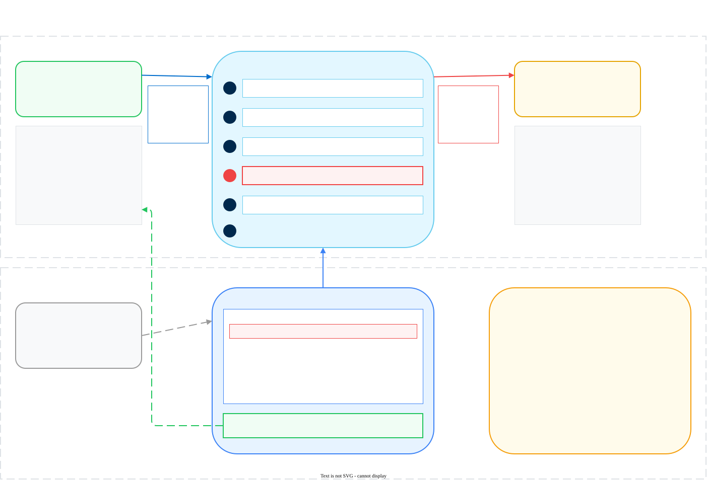
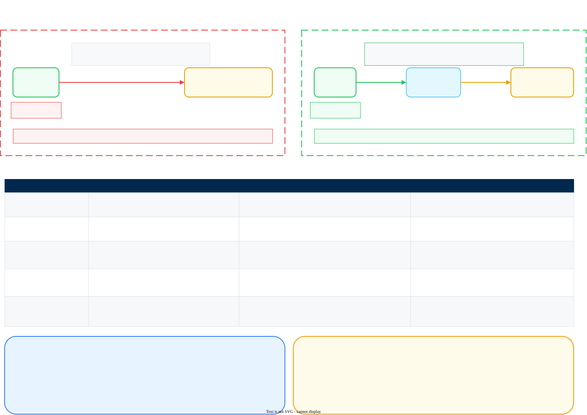
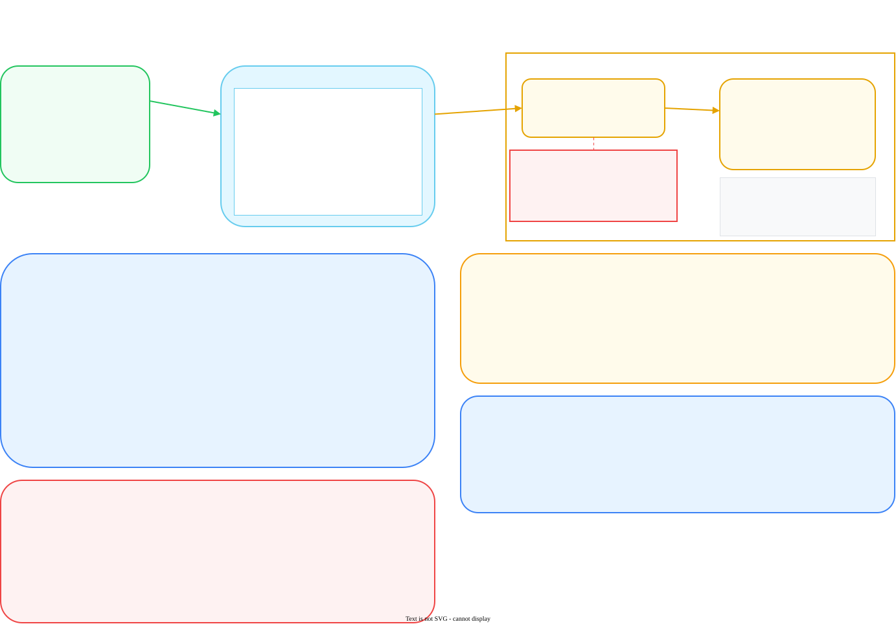
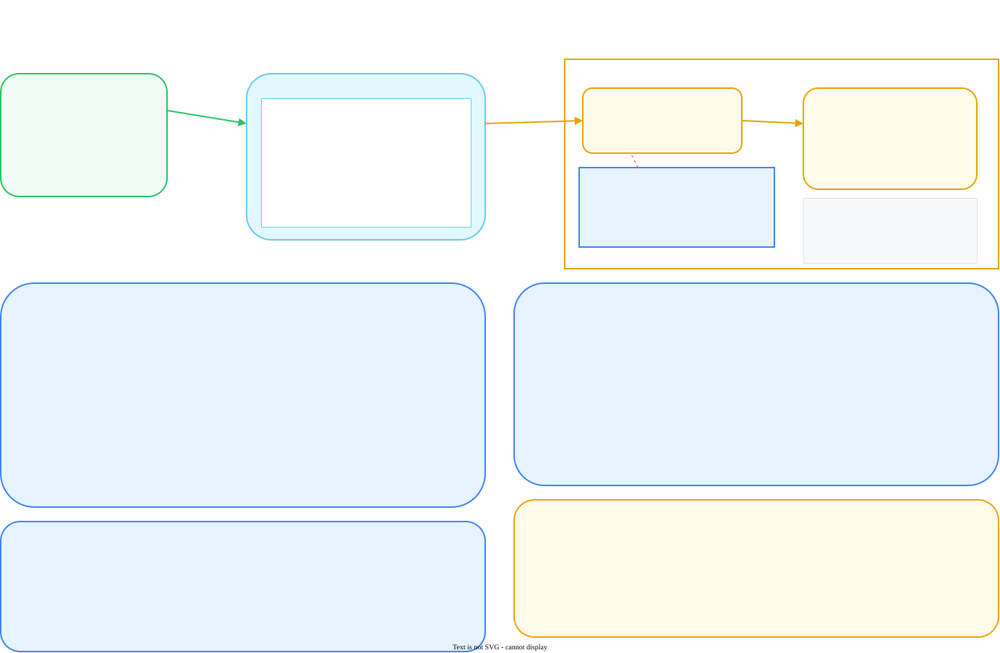
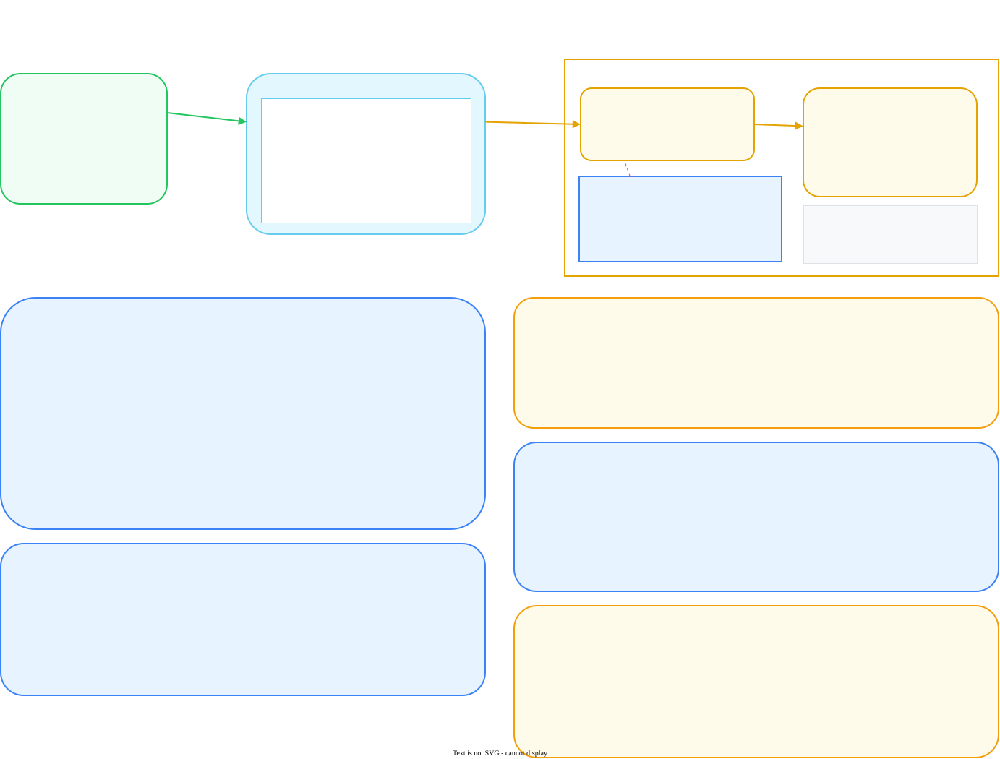
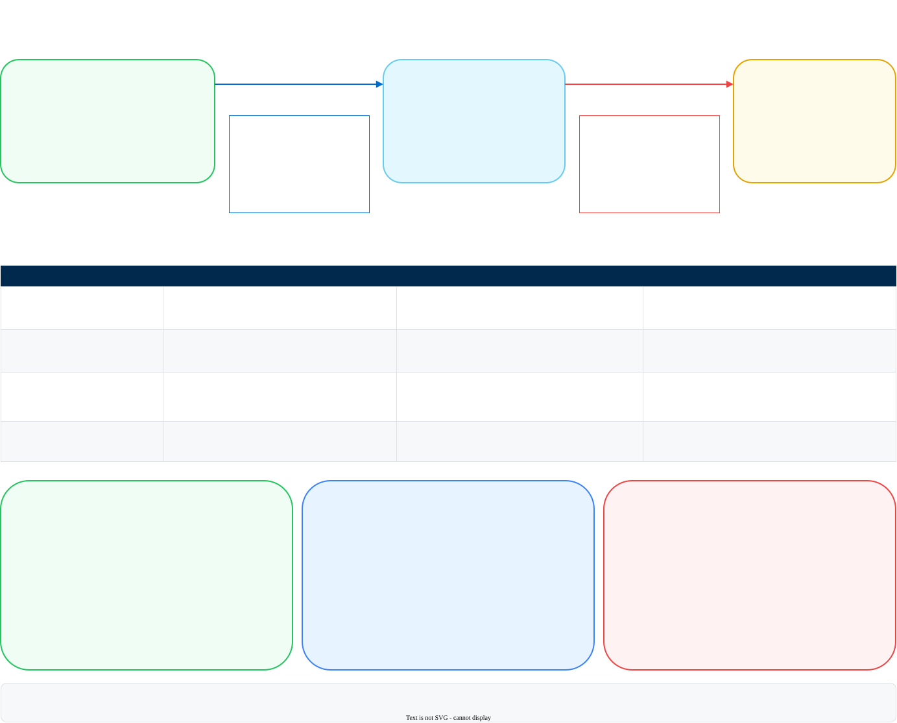
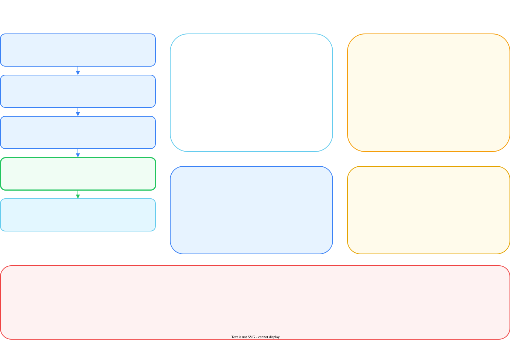
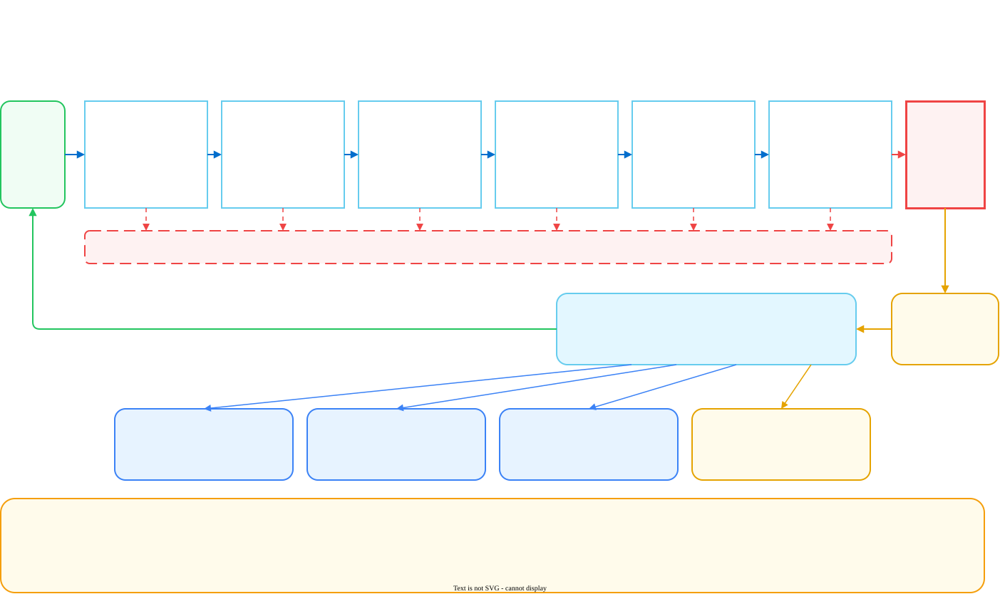

AI Gateway flow diagrams
Each diagram is layered on purpose. The boxes and arrows carry the conceptual story that an architect or an exec can follow in one pass. The monospace insets carry the actual headers, environment variables, and field names, so the same page also works as a build reference on a deployment call. Nothing is duplicated between the two layers.
Sources are .drawio, exports are .svg (25 to 50 KB each, light mode pinned, no raster fallback). Both sit next to this page in docs/guides/ai-gateway/diagrams/, so every diagram below is editable. Open a .drawio file in diagrams.net, edit, then re-export with clean-svg.py in the same folder.
1How the API key gets into the app call
Answers: why the keys are essential, and how the credential is actually swapped.

The whole diagram exists to make step 4 land: the gateway strips the caller's key and attaches the provider credential. That single swap is what makes every downstream control possible, because the provider will only ever see one caller.
- Data plane — the six things the gateway does, with the request headers shown before and after the swap.
- Control plane — where the provider key comes from, what the integration record holds, and how gateway keys are issued per application.
- Right panel — the without-gateway and with-gateway comparison, for the slide where someone asks why this is worth doing.
2Getting the gateway inline
Answers: how the gateway gets inline, and what elements are required.

The table is the part a customer will screenshot. Every row has a failure column, because most cutover problems are one of these five values being subtly wrong rather than anything about the gateway itself.
The gateway is opt-in per application. Nothing forces traffic through it by routing, DNS, or a proxy setting. An app that still points at the provider endpoint keeps working and stays completely invisible to the gateway, which means coverage is an application inventory exercise, not a deployment task.
3AI Gateway fronting Amazon Bedrock
The requested Bedrock case, built on standard Amazon Bedrock with an IAM credential.

- Two meters run at once — AWS still bills Bedrock inference to the customer's own account, and Palo Alto Networks separately meters flex credits by token volume. These are different numbers in different consoles, and Finance will ask about it.
- Where the prompt physically goes — with SaaS the prompt transits a Palo Alto Networks endpoint before it reaches AWS, even though Bedrock sits inside the customer's own account. For a customer who picked Bedrock specifically to keep inference in-account, that is a cutover-blocking conversation if it surfaces late.
- The detail box — the credential, region, inference profile, and PrivateLink specifics, all since confirmed against the documentation mirror and listed below.
4AI Gateway fronting OpenAI
The same structure as Bedrock, plus the scope distinction that trips up most OpenAI conversations.

sk-proj- key. One OpenAI key lives in the integration record, and the OpenAI usage dashboard collapses to a single caller as a result.This is the one to raise on the first call. ChatGPT in a browser, the desktop app, and the mobile app have no base URL setting. There is nothing to point at a gateway, so that traffic never reaches Observability and no budget, allowlist, or guardrail touches it.
When a customer says "we use ChatGPT", establish which one they mean. Code calling api.openai.com from an SDK, an agent framework, or a CI job is exactly what the gateway covers. People typing into chatgpt.com is a network egress policy, a CASB or SASE control, or ChatGPT Enterprise's own admin and compliance tooling.
The same split applies to Claude.ai against the Anthropic API, and to a Copilot surface against the Azure endpoint behind it. Naming the split on the first call avoids a scope argument at cutover, because "we are governing our AI usage" turns out to mean two different projects.
5AI Gateway fronting Azure AI Foundry
The Azure case, where the naming discipline matters more than the wiring.

- Two catalog entries, not one — Azure OpenAI and Azure Foundry are separate provider entries in Strata Cloud Manager and are not interchangeable. Pick by which resource actually hosts the model the app will call. A team using both needs two integrations and two slugs, which conveniently is also how you give them two separate budgets.
- The deployment name is not the model name — Azure serves a deployment someone created and named, which may be
gpt4o-prodorchat-eu. That name is what the app sends, what goes on the allowlist, and what appears in every log row. A rename in Azure breaks every caller and surfaces as a model-not-found rather than an auth failure, which sends people looking in the wrong place. - Keyless is possible on the Azure OpenAI side — an Entra identity holding Cognitive Services OpenAI User on the resource itself removes the static secret entirely. The integration form does accept it, as Azure Managed Entity or Azure Entra ID.
- Provisioned throughput breaks reconciliation — if the resource runs on PTU rather than standard, Azure spend is committed capacity and does not move with token counts at all. Gateway cost figures and the Azure invoice will never match, and they are not supposed to. Use the gateway numbers for allocation between teams, not for predicting the bill.
This diagram carried the most unconfirmed detail of the eight when it was drafted, because the deployment guide records the Azure integration form's exact field set as still to be captured. The Azure Foundry integration page in the documentation mirror answers all of it, and the detail box now states the field set rather than asking about it.
6Routing Claude Code through the gateway
The client-side half of the picture, and the only path in this set that has been run end to end.

The other diagrams face a provider. This one faces the client, which is where cutover actually fails. The four-column table exists because each variable has a distinct failure mode, and the third one is the one everybody forgets.
ANTHROPIC_BASE_URL— Strata Cloud Manager displays the address with a/v1suffix, and Claude Code appends its own/v1/messages. Drop the suffix or the path doubles.ANTHROPIC_AUTH_TOKEN— while it is set it takes precedence over a saved claude.ai login, and the session banner changes to API Usage Billing. That is expected, not an error. The login stays saved and comes back the moment the variable is unset.ANTHROPIC_CUSTOM_HEADERS— Claude Code sends bare model names rather than@slug/modelreferences, so without the provider header every prompt fails with400 Either x-portkey-config or x-portkey-provider header is required.
The wiring in this diagram comes from a section of the deployment guide that was run live and screenshotted, so the values, the error strings, and the precedence behaviour are observed rather than inferred. The green callout gives the four proof steps in the order that isolates the fault fastest: echo the variable, curl the gateway, run /status, then look for the row in Observability.
First, where the key is allowed to be written. Never in a project's .claude/settings.json, because that file is committed and shared with everyone who clones the repository. Use the user-level ~/.claude/settings.json, or the gitignored .claude/settings.local.json for a single project.
Second, one key per developer or one for the team. A shared key makes Observability show one caller for the whole team, and revoking it after a leaver takes everyone offline at once. A key per developer gives per-person cost and clean revocation, at the price of issuing and tracking them. Either way, put the person or team in the key's metadata tags at issue time, because that is the only thing the logs can group by later.
Claude Code is only the worked example. Any client that accepts a base URL override follows the same pattern with no application logic change, which is the point the footer bar makes.
7Attribution and billing
Answers: how billing is defined, what data is captured, and where group information comes from.

This is the question that prompted the diagram, and the answer is counter-intuitive enough to be worth stating plainly. SSO and Cloud Identity Engine govern who can log into Strata Cloud Manager. They do not tag traffic, and there is no directory group carried on the request.
Groups are JSON metadata tags you attach to each gateway API key. Those tags flow into the logs, a budget or rate policy in Policies & Profiles matches on a Condition Key with includes and excludes lists, and Group by Key then applies the cap per value of that key rather than to the matched set as a whole.
The consequence: the metadata schema is the chargeback model. It has to be agreed before the first key is issued, because budget limits never apply retroactively and keys already in production carry their old tags until they are reissued.
The statement above holds for groups, and it is still the right answer to the chargeback question. Two things it understates are covered in diagram 9. Cloud Identity Engine does more than gate console login: through Directory Sync it decides which directory users exist as AI Gateway users in which workspace, and a User API key can only be issued against someone that sync has already provisioned. And a request authenticated with a JWT does carry a user identity, read from the token's own claims. What never arrives is a directory group the gateway could policy on, which is why metadata remains the grouping mechanism either way.
8What the gateway does to a single request
The per-request pipeline, including every place a call can stop and where the record lands.

This is the troubleshooting diagram. Each gate shows the error a caller actually receives, so a support conversation can start with the error string and land on the right gate immediately.
A guardrail that exists in the catalogue does nothing until it is attached. Every check in step 4 runs only when its guardrail ID is listed in a config's before_request_hooks or after_request_hooks, and a guardrail set to async=true observes and logs without blocking, returning 246 rather than 446. Enabling a guardrail is not the same as enforcing it on a route.
9How an agent's identity reaches the gateway
Answers: how an agent running against the gateway is authenticated, what identity the gateway ends up attributing the call to, and which part of that Cloud Identity Engine and Azure Entra ID each supply.
![Three horizontal bands. The control plane band runs Entra ID into Cloud Identity Engine, Directory Sync, a one-to-one group to workspace mapping, and the resulting workspace member list, labelled as running on a schedule. The data plane band runs an agent to Entra ID for a token, then into the AI Gateway, which validates the signature against the JWKS, resolves the organization and workspace, checks the route scope, and attributes the request. The egress band shows the gateway swapping in its own Azure credential to reach Azure AI Foundry. A callout between the first two bands explains that the email claim on the token has to string match an AI Gateway user in the target workspace. Side panels cover why there is no User-ID here, the three separate jobs Entra ID performs, what each credential type attributes to, and which credential an agent should use.](aigw-agent-identity.svg)
The question as usually asked assumes a PAN-OS mechanism that does not exist here. User-ID is a firewall construct: the firewall learns an IP-to-user mapping out of band, from a domain controller or a User-ID agent, and security policy then matches on the user it found. The AI Gateway has none of that. There is no IP-to-user mapping, no User-ID agent, and no directory group travelling with the request.
Identity arrives inside the request, as the credential itself. So the question that does have an answer is which credential the agent presents, and what identity that credential carries. The diagram is built around that reframing, which is why the red panel sits first.
The three jobs Entra ID does are on three different clocks, and conflating them is most of the confusion. They are also configured in three different places, so a customer can have one working and assume the others follow.
- Source directory, behind Cloud Identity Engine — supplies the users and groups that become workspace membership. Runs on a sync schedule, never on the request path.
- Token issuer for the agent — signs the JWT the agent presents, which the gateway validates against Entra's JWKS. This one runs per request.
- Egress credential to Azure — a service principal or managed identity the gateway holds to reach Azure AI Foundry. It has nothing to do with the caller, and the caller never sees it.
All three can point at the same Entra tenant. They are still three separate configurations, and the third one works perfectly well when the first two are absent.
Per-user attribution turns on a plain string comparison. When the email on the agent's token matches an AI Gateway user in the target workspace, the request is attributed to that person and inherits their workspace role. When it does not match, the request falls back to a generic workspace service key and the per-user attribution is silently lost, with no error on the call.
That makes the User Identity Attribute chosen in Directory Sync, UPN or Mail, a decision with teeth. It has to produce the same value as the email claim Entra puts in the token. Choose Mail wherever the UPN is a user@tenant.onmicrosoft.com form and the real address is not.
On the data plane, the gateway reads user identity from the claims in a fixed precedence order: email_id, then sub, then uid. Tokens must be RS256 with a kid that resolves in the configured JWKS and an exp that is present and in the future. An HS256 token is rejected with an error that reads as a bad API key rather than a bad algorithm, which sends people looking at the wrong thing.
Mode A is for when you control the token issuer and can add the gateway's own portkey_* claims to it. Mode B takes a stock IdP token and resolves the organization, the workspace, and the scopes on the gateway instead. Entra is explicitly the Mode B case, because an organization generally cannot add gateway-specific claims to a corporate token for one application. Where scopes cannot be issued in Entra, JWT_LOCAL_AUTH_DEFAULT_SCOPES supplies them.
Validation location also varies. On AI Gateway Cloud the management plane validates the token. A hybrid or air-gapped gateway on 2.5.0 or later can validate locally with JWT_ENABLED=ON, which keeps authentication working when the management plane is unreachable.
Gaps worth raising with the customer
Twelve points that a customer conversation tends to skip past. All twelve changed the diagrams and are baked into the artwork rather than left as speaker notes.
| Gap | Why it matters | Where it appears |
|---|---|---|
| The gateway is opt-in | Nothing forces traffic through it. An app still pointing at the provider endpoint works fine and is invisible. Coverage has to be closed with egress policy or by revoking direct provider keys. | Diagram 2, bottom right; diagram 8, bottom right |
| Consumer AI apps cannot be fronted at all | ChatGPT, Claude.ai, and other browser or desktop apps have no base URL setting, so they can never route through the gateway. If the customer's mental model of "our AI usage" is the app rather than the API, half the programme is a CASB or SASE conversation, not a gateway one. | Diagram 4, the red headline box |
| Two separate money flows | Flex credits and provider spend are different numbers in different consoles. Finance will reconcile them and find they do not match, because they are not meant to. | Diagrams 3, 4, and 5; diagram 7 |
| Provisioned capacity breaks cost reconciliation entirely | With Azure PTU, or any committed capacity arrangement, provider spend is fixed and does not track tokens. Gateway cost figures are then an allocation tool only, and presenting them as a bill forecast will lose credibility with Finance. | Diagram 5, two meters callout |
| Provider naming discipline is a prerequisite | Azure deployment names are typed by hand at deploy time and are what the app, the allowlist, and every log row carry. Agreeing a convention before provisioning costs nothing; retrofitting one breaks every caller. | Diagram 5, deployment name callout |
| Metadata schema is the chargeback model | It must be agreed before the first key is issued. Budget limits are never retroactive and issued keys carry their old tags. | Diagram 7, right panel and bottom callout; diagram 6, second rollout decision |
| Limits cannot be edited once set | Budget and rate limits cannot be changed by any organization member after creation. Getting them wrong means recreating the object. | Diagram 7, bottom right |
| Data residency under SaaS | Prompts leave the customer environment before reaching the provider, even when the model sits in the customer's own AWS account or Azure subscription. This is the argument for Hybrid, and it should surface in design rather than at cutover. | Diagram 3, "Where the prompt physically goes" |
| An unattached guardrail enforces nothing | PII detection and content moderation are Pro guardrails on the gateway, so the capability is there. It only takes effect once the guardrail ID is attached to a config's request hooks, and an async=true guardrail logs without blocking. A customer who enables one in the catalogue and assumes it is live will find nothing was ever stopped. | Diagram 8, step 4 and bottom left |
| Per-user attribution needs an application change | A shared application key attributes to the application. Splitting it per end user means sending x-portkey-metadata with its reserved _user key on every request, which the application has to do. For developer tooling this becomes a one-key-per-developer decision with real revocation consequences. | Diagram 7, bottom centre; diagram 6, red callout |
| Agent identity hangs on one string comparison | The email claim on an agent's JWT has to match an AI Gateway user in the target workspace, or the call quietly attributes to a generic workspace service key instead of a person. The UPN or Mail choice in Directory Sync is what decides whether those two strings agree, and a user whose chosen attribute is empty is skipped during sync with no error anywhere. | Diagram 9, the amber join callout and pitfalls 4 and 5 |
| Streaming calls log zero cost by default | With stream: true the provider returns no usage data, so tokens and cost record as zero and budget enforcement never sees the spend. The application has to send stream_options: {include_usage: true}. This affects every OpenAI-compatible provider, Azure OpenAI included. | Diagram 4, confirmed-detail box |
Verification against the documentation mirror
These diagrams were drafted on 17 September 2026 with external research unavailable: WebSearch was blocked by an organization policy on this account, WebFetch was not available, and outbound curl was denied. Every provider-specific claim was grounded in repository material instead, and anything that could not be grounded that way was called out on the diagram rather than asserted.
The 627-page Portkey documentation mirror landed in pan-docs-reference/docs/portkey/ on 25 September 2026, eight days later. Almost every open question is answerable from it, so the diagrams were re-reviewed against it and the caveat boxes were replaced with the answers. What follows records what was checked, so a reviewer can attack the sourcing rather than the artwork.
Bedrock, on diagram 3 — all four resolved
- Assumed role — supported.
product/model-catalog/connect-bedrock-with-amazon-assumed-role.mdgives the trust principalarn:aws:iam::039293892788:role/AirsGwEnterpriseRoleand requiressts:TagSessionfor session tags. This is a different principal from the299329113195inbound one the hybrid guides warn against, which is worth saying out loud so nobody blocks the wrong account. - Inference profiles — selectable, per
integrations/llms/bedrock/aws-bedrock.md:430, and they need one additional IAM permission. - Region scope — the integration carries a default region, and
x-portkey-aws-regionoverrides it per request (aws-bedrock.md:536), so one slug can serve several regions. The same page also documents a third auth type the diagram did not show: a Bedrock API key with theapiKeyauth type. - PrivateLink — supported for Self-Hosted Enterprise through the Custom Host option (
aws-bedrock.md:561).
OpenAI, on diagram 4 — three resolved, one still open
- Organization ID and Project ID — named optional fields on the integration (
integrations/llms/openai.md:112,444). - Endpoint coverage — wider than assumed. The Responses API is described as fully supported, and Realtime, embeddings, batches, files, and fine-tuning all have coverage.
- Self-hosted OpenAI-compatible models — vLLM and Ollama have their own provider pages, so they are separate integrations rather than a Custom Host on this one.
- Streaming — still open on content logging. The cost side turned up a related problem that matters more in practice: with
stream: truethe provider returns no usage data, so tokens and cost record as zero and budgets never see the spend unless the application sendsstream_options: {include_usage: true}(product/observability/cost-management.md:168). That applies to every OpenAI-compatible provider, Azure OpenAI included, and it is now on the diagram.
Azure, on diagram 5 — all resolved
Every answer here comes from integrations/llms/azure-foundry.md, except the role, which comes from the AKS hybrid page.
- Auth — three types are offered: the resource API key, Azure Managed Entity with a Managed ClientID, or Azure Entra ID with ClientID, Secret, and Tenant ID (
:102,104,125,151). Keyless is available, so the static resource key is a choice. - API version — a field you set, required whenever the version appears in your deployment URL (
:139). - Deployments per integration — Azure Deployment Name is optional and required only when one resource holds several deployments (
:145). The Foundry URL is a single base endpoint, so an integration is pinned to one resource and region and a second resource needs a second slug. - The Entra role —
Cognitive Services OpenAI Usercovers Azure AI Foundry as well as Azure OpenAI, granted on the resource itself (self-hosting/hybrid-deployments/azure/aks.md:997). The diagram was already right about this.
Corrected, on diagrams 7 and 8
- Per-user attribution — diagram 7 asked whether per-request metadata is accepted before promising it. It is:
product/observability/metadata.mddocumentsx-portkey-metadatawith a reserved_userkey that Observability groups and filters on. The caveat now names the mechanism, and notes that the application has to set it. - Guardrails — diagram 8 said PII detection and content moderation are deliberately not gateway guardrails and belong to AI Runtime. That is wrong.
product/guardrails/pii-redaction.mddocuments a Pro PII guardrail redacting phone, email, location, IP, SSN, names, and credit card, andlist-of-guardrail-checks.md:253lists Moderate Content, Check Language, Detect PII, and Detect Gibberish as Pro checks. Palo Alto Networks Prisma AIRS also appears at:88as a guardrail provider configured inside the gateway. Step 4 named Check Language and Detect Gibberish as basic checks, when both are Pro. The real limitation, which replaced the wrong one, is that a guardrail does nothing until its ID is attached to a config'sbefore_request_hooksorafter_request_hooks, and anasync=trueguardrail observes without blocking (capabilities.md:74-81).
Agent identity, on diagram 9 — drawn entirely from the mirror
This diagram was drafted after the mirror landed, so every box on it has a source rather than an assumption behind it.
- The control plane band —
product/enterprise-offering/org-management/directory-sync/cie-directory-sync.mdgives the Connected Directory and User Identity Attribute fields, the one-to-one group to workspace mapping, the requirement that the workspace already exist, the delta sync every 15 minutes against a roughly weekly full cache rebuild, and the fact that deleting a mapping removes those users immediately. The same page scopes the feature to Strata Cloud Manager tenants, with SCIM as the non-SCM path. - The data plane band —
product/enterprise-offering/org-management/jwt.mdgives the RS256 requirement, thekidandexprules, theemail_idthensubthenuidprecedence, the organization and workspace resolution order, the per-route scopes, Mode A against Mode B with Entra named as the Mode B example, the Entra JWKS and issuer and audience values,JWT_ENABLED, andJWT_LOCAL_AUTH_DEFAULT_SCOPES. - The two-layer split — the MCP gateway authentication pages state it most plainly: gateway auth covers the caller reaching the gateway, server auth covers the gateway reaching what is behind it, and the caller never holds the second credential. The egress band is the same split applied to a model provider.
- The egress band — the three Azure auth types and the
Cognitive Services OpenAI Userrole are the same sources already cited for diagram 5. - The no-User-ID framing — asserted from absence, which is worth naming as a weaker form of evidence. Grepping
user-idanduseridacross the AI Gateway guides returns nothing, and in the mirror the only hits are an unrelated ElastiCache ARN and anx-user-idheader-forwarding example in the MCP gateway docs, which is a header an application sets rather than anything the gateway learns.
Still unverified
- Whether streaming response content is logged in full or summarized. The usage-data behaviour above is documented; the log body is not.
- Whether the SaaS base URL differs by region.
configure-ai-gateway.md:373still says the AI Gateway is initially available in the Americas region for both SaaS and Hybrid, and nothing states what changes when that expands. CLAUDE_CODE_ENABLE_GATEWAY_MODEL_DISCOVERYand the exact400 Either x-portkey-config or x-portkey-provider header is requiredstring on diagram 6. Neither appears anywhere in the mirror; the deployment guide attributes the first to Anthropic's own LLM gateway page. Both are plausible and neither is confirmable from this repository.
Suggested next step
If these work, the natural placement in ai-gateway-deployment.html is one diagram per phase rather than a gallery:
| Diagram | Placement |
|---|---|
| 1. How the API key gets into the app call | Phase 1 overview, or the concepts section, wherever the two-key model is first introduced |
| 2. Getting the gateway inline | The client wiring phase, immediately above the environment variable block |
| 3. Fronting Amazon Bedrock | The integration phase, inside the Bedrock tab |
| 4. Fronting OpenAI | The integration phase, inside the OpenAI tab. The ChatGPT scope box may also be worth lifting into the guide's opening scope section, since it reframes the whole engagement. |
| 5. Fronting Azure AI Foundry | The integration phase, inside the Azure tab, next to the existing TODO(provider-azure-openai) marker |
| 6. Routing Claude Code through the gateway | The Claude Code section, above the three exports. The four-column table could replace prose the guide currently carries. |
| 7. Attribution and billing | Phase 5, above the Policies & Profiles walkthrough |
| 8. Single request lifecycle | The troubleshooting or reference section at the end |
| 9. How an agent's identity reaches the gateway | Phase 5, immediately before diagram 7, since it answers where the identity on a request came from and diagram 7 then answers what is done with it. The red no-User-ID panel is also the right thing to put in front of a PAN-OS audience in the opening concepts section. |
Wiring them in is deliberately not part of this change. The guide itself is untouched, so this page can be reviewed, argued with, or rejected without anything to unpick. If the set is approved, the follow-up is lazy-loaded img tags with italic captions inside the relevant collapsible bodies of ai-gateway-deployment.html.